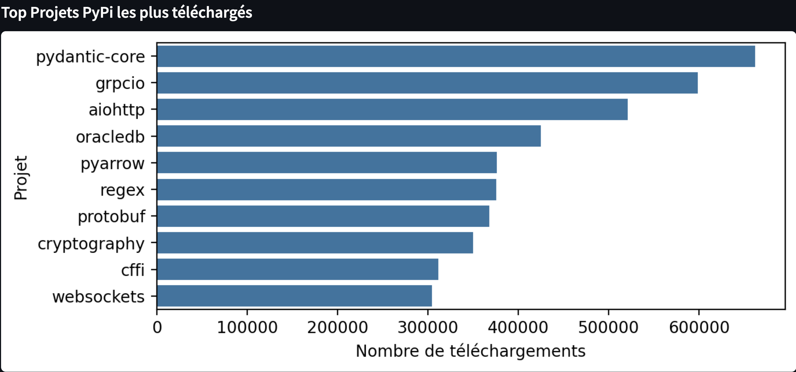
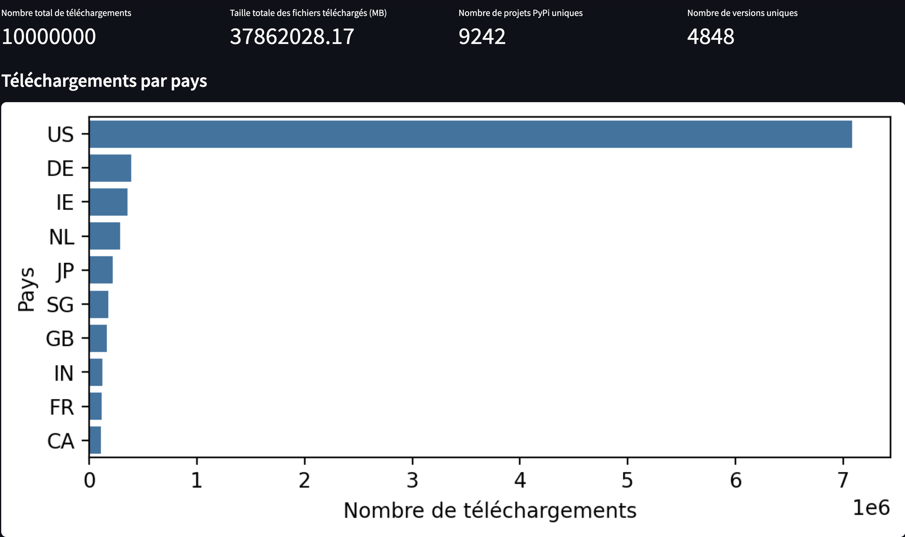

Cas d'étude : Analyse des téléchargements PyPI (GCP & Streamlit)
Découvrez en détails ma méthodologie pour la création d'un pipeline de données scalable.
🎯 Contexte & Objectifs
Analyse des données publiques issues de PyPI sur les téléchargements de packages Python, avec un pipeline automatisé sur GCP et Streamlit.
- Collecte automatique via Composer (Airflow)
- Traitement SQL avec BigQuery
- Dashboard interactif Streamlit
- Automatisation CI/CD via GitLab et Docker
📊 Dashboards & Visualisations
Quelques exemples concrets des dashboards interactifs réalisés :

Téléchargements par Pays

Top Projets PyPI téléchargés
⚙️ Méthodologie & CI/CD
Workflow entièrement automatisé et géré via GitLab CI/CD et Docker, avec séparation nette des environnements dev et prod.
./deploy.sh prod